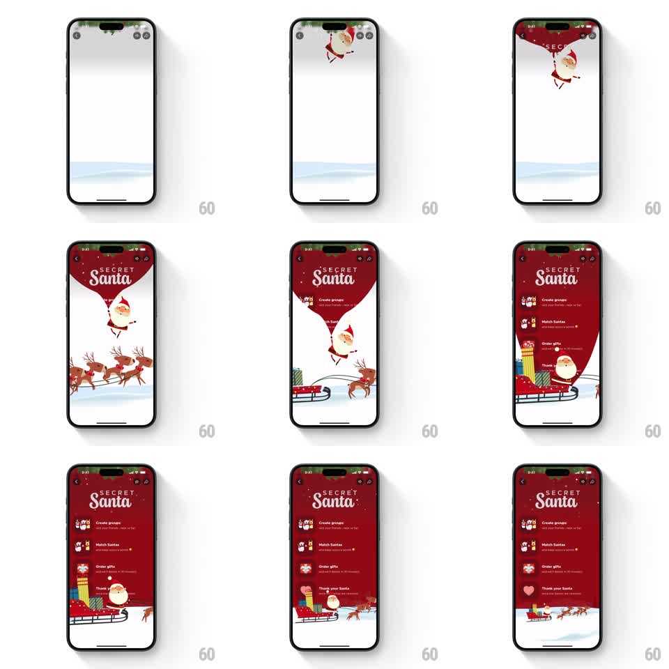

Media
Frame-by-frame

Rebuild this animation 1:1: Blinkit's Secret Santa intro - a Santa mascot parachutes down with a red "Secret Santa" banner over a snowy scene, reindeer slide across the bottom, then the feature steps slide up in stagger over the banner with a CTA.

Rebuild this animation 1:1: Blinkit's Secret Santa intro - a Santa mascot parachutes down with a red "Secret Santa" banner over a snowy scene, reindeer slide across the bottom, then the feature steps slide up in stagger over the banner with a CTA. ## Integration Integration: stack-agnostic spec - springs given as stiffness/damping, timed motions as duration + curve; map every value to your framework and animation library of choice. ## Scene A white winter scene with a snowy horizon at the bottom. A cartoon Santa drops from the top holding a long red "Secret Santa" banner that unrolls down the screen. A sleigh with reindeer slides across the bottom snow line. Over the banner, the four steps appear in stagger with icons: "Create groups", "Match Santas", "Order gifts", "Thank your Santa" - each with a one-line description. A close X and action icons sit at the top. ## Motion spec Pattern: staggered onboarding intro, ~4s total. - Santa falls from above the top edge (700ms, ease-in) with a soft bounce on arrival (spring stiffness 260 damping 14), the red banner unrolling downward behind him (600ms, ease-out). - The reindeer sleigh slides in from the left along the snow line (900ms, ease-out) and parks. - The "Secret Santa" title settles onto the banner (scale 1.1 to 1, 250ms). - The four steps slide up in stagger (each 350ms, ease-out, 120ms apart), icons popping with a small spring (stiffness 350 damping 18) as their row lands. - A CTA button fades in last at the bottom (300ms). ## Calibration - Every element enters from a direction that matches its nature: Santa from above, sleigh from the side, steps from below. - The banner's unroll is the backbone - nothing else starts until it is mostly down. ## Reduced motion All elements fade into place without travel. ## Don't miss - Santa stays attached to the banner's top edge the whole time - one unit, not two animations. - The step icons are Christmas-specific (group, match, gift, heart), each tinted to pop on the red banner.